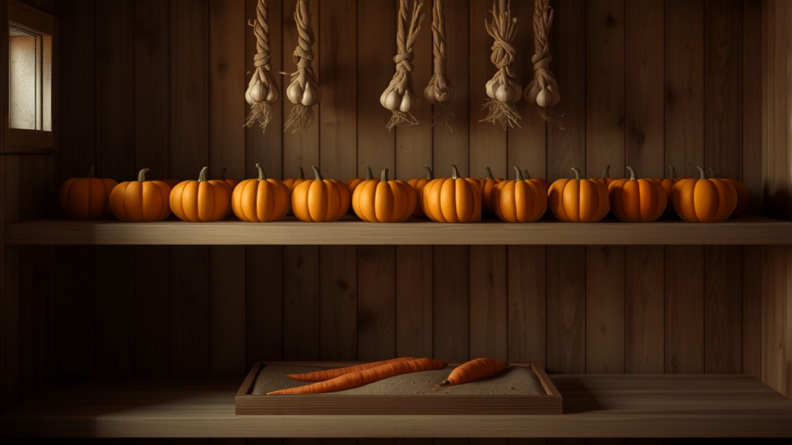

Gemüse einlagern über den Winter: Temperatur, Feuchte und die häufigsten Fehler
Die Ernte ist der leichte Teil. Der schwierige beginnt danach, im Keller, wo aus einer guten Kartoffelernte innerhalb von acht Wochen ein Eimer voller Triebe wird.
Lagern heißt, eine Pflanze in Wartestellung zu halten: kühl genug, dass sie nicht weitermacht, feucht genug, dass sie nicht vertrocknet, trocken genug, dass nichts fault. Diese drei Größen stehen gegeneinander, und für jede Kultur liegt der Punkt woanders.
Die Lagertabelle
| Kultur | Temperatur | Luftfeuchte | Haltbarkeit |
|---|---|---|---|
| Kartoffeln | 4–8 °C, dunkel | hoch, 85–90 % | 4–7 Monate |
| Möhren | 0–2 °C | sehr hoch, 95 % | 4–6 Monate |
| Rote Bete, Sellerie, Pastinake | 0–2 °C | sehr hoch, 95 % | 4–6 Monate |
| Zwiebeln | 0–5 °C | niedrig, 65–70 % | 6–8 Monate |
| Knoblauch | 0–5 °C | niedrig, 60–70 % | 6–9 Monate |
| Kürbis | 12–15 °C | niedrig, 60–70 % | 3–6 Monate |
| Weiß- und Rotkohl | 0–2 °C | hoch, 90 % | 3–5 Monate |
| Wirsing, Rosenkohl | 0–2 °C | hoch, 90 % | 4–8 Wochen |
| Äpfel | 2–5 °C | hoch, 90 % | je nach Sorte 2–6 Monate |
Zwei Werte fallen aus der Reihe, und beide sind der häufigste Grund für Verluste. Zwiebeln und Knoblauch wollen es trocken, alles andere feucht. Und der Kürbis will es warm: Unter zehn Grad nimmt er Schaden und wird von innen matschig, weshalb ausgerechnet er nicht in den kühlen Keller gehört, sondern in den Wohnraum oder unter das Treppenhausdach.
Was vor dem Einlagern passiert
Kartoffeln nicht waschen. Die anhaftende Erde schützt vor Feuchtigkeitsverlust und vor Pilzen. Nach der Ernte einige Stunden abtrocknen lassen, dann trocken abreiben und in Kisten füllen. Gewaschene Kartoffeln halten Wochen statt Monate.
Zwiebeln und Knoblauch zwei Wochen nachtrocknen. Luftig ausgebreitet, im Trockenen, bis die äußeren Häute rascheln und der Hals fest ist. Erst dann kommen sie ins Lager. Wer sie feucht einlagert, hat im Dezember Schimmel am Hals.
Kürbis ausreifen lassen. Ein bis zwei Wochen warm und trocken, damit die Schale hart wird. Und immer mit einem Stielstück von mehreren Zentimetern ernten: Bricht der Stiel heraus, entsteht eine offene Wunde, und der Kürbis fault von dort aus.
Wurzelgemüse: Laub ab, Wurzel dran. Das Kraut von Möhren und Roter Bete abdrehen oder knapp abschneiden, sonst zieht es Feuchtigkeit aus der Wurzel. Die Wurzelspitze bleibt heil, denn jede Schnittstelle ist eine Eintrittsstelle.
Nur Makelloses einlagern. Das ist die Regel, an der alles hängt. Angestochenes, angefressenes oder gequetschtes Gemüse kommt in die Küche, nicht ins Lager. Eine einzige faulende Knolle steckt in wenigen Wochen die ganze Kiste an.
Der Apfel, der die Kartoffeln keimen lässt
Äpfel geben Ethylen ab, ein Reifegas. Kartoffeln reagieren darauf mit Keimen, Möhren werden bitter, Kohl verliert die Blätter. Deshalb gehören Äpfel in einen anderen Raum – nicht ins andere Regal, in einen anderen Raum, oder wenigstens in eine geschlossene Kiste bei guter Lüftung.
Umgekehrt gilt dasselbe für den Geruch: Zwiebeln und Knoblauch neben Äpfeln oder Kohl bedeuten, dass die Äpfel nach Zwiebeln schmecken. Wer nur einen Raum hat, staffelt nach Höhe und Abstand und lüftet regelmäßig.
Wenn kein Keller da ist
Die alten Lagerräume – kühl, erdfeucht, frostfrei – gibt es in neuen Häusern nicht mehr. Drei Wege bleiben.
Die Sandkiste. Für Möhren, Rote Bete, Sellerie und Pastinaken die beste Lösung überhaupt: eine Kiste mit leicht feuchtem Sand, das Gemüse schichtweise hineingelegt, sodass sich die Stücke nicht berühren. Der Sand hält die Feuchtigkeit und schließt die Luft aus. Steht die Kiste in einer ungeheizten Garage oder im Treppenhaus, ist das dem Kühlschrank überlegen.
Die Erdmiete. Eine flache Grube im Garten, mit Stroh ausgekleidet, das Gemüse hinein, darüber Stroh und Erde, seitlich eine Lüftung. Klingt archaisch und funktioniert, solange Mäuse draußen bleiben – ein Drahtgitter unter der Miete löst das.
Der Balkon in Styropor. Eine Styroporkiste, innen eine Lage Zeitungspapier, an der Nordseite geschützt aufgestellt. Bei strengem Frost mit einer Decke abgedeckt. Für kleinere Mengen reicht das über den ganzen Winter.
Und was sich nicht lagern lässt, wird haltbar gemacht: Bohnen und Erbsen einfrieren, Weißkohl als Sauerkraut, Gurken und Rote Bete einlegen. Das ist keine zweite Wahl, sondern die ältere.
Einmal im Monat durchsehen
Zehn Minuten, die den Unterschied machen. Jede Kiste einmal durchgehen, alles Weiche, Fleckige oder Keimende herausnehmen und verbrauchen oder wegwerfen. Fäulnis breitet sich über Berührung aus, und ein einziger übersehener Kohlkopf entscheidet, ob die Kiste bis März hält.
Wenn Kartoffeln früh keimen, ist es meist zu warm – die Keime abbrechen hilft kurzfristig, kühler stellen dauerhaft. Werden Möhren weich, ist es zu trocken: mehr feuchter Sand. Schimmelt es großflächig, fehlt die Luftbewegung.
Ein voller Keller im November ist noch keine Ernte, sondern eine Zwischenstation. Was zählt, ist der März – und darüber entscheiden ein Thermometer, eine Kiste Sand und zehn Minuten im Monat. Bevor der erste Frost kommt, geh einmal durch die Räume, die du hast, und miss nach, wie warm sie wirklich sind.
Häufige Fragen
Wie lagert man Kartoffeln richtig?
Dunkel, bei vier bis acht Grad und hoher Luftfeuchte, in luftdurchlässigen Kisten. Nicht waschen, sondern die Erde daran lassen und nur trocken abreiben. Licht macht Kartoffeln grün und damit ungenießbar, Wärme lässt sie keimen. So halten sie vier bis sieben Monate.
Warum dürfen Äpfel nicht neben Kartoffeln liegen?
Äpfel geben Ethylen ab, ein Reifegas. Kartoffeln keimen dadurch früher, Möhren werden bitter, Kohl verliert Blätter. Äpfel gehören deshalb in einen anderen Raum oder wenigstens in eine geschlossene Kiste bei guter Lüftung.
Wie lagert man Möhren über den Winter?
In einer Kiste mit leicht feuchtem Sand, schichtweise und ohne dass sich die Möhren berühren, bei null bis zwei Grad. Das Kraut vorher abdrehen, weil es sonst Feuchtigkeit aus der Wurzel zieht. So halten sie vier bis sechs Monate und bleiben knackig.
Warum gehört Kürbis nicht in den Keller?
Weil er als einziges Lagergemüse Wärme braucht: zwölf bis fünfzehn Grad und trockene Luft. Unter zehn Grad nimmt er Schaden und wird von innen matschig. Der Wohnraum oder ein trockener Flur ist der bessere Ort als der kühle Keller.
Wie lagert man Gemüse ohne Keller?
Mit einer Sandkiste in Garage oder Treppenhaus für Wurzelgemüse, mit einer Erdmiete im Garten oder mit einer Styroporkiste auf dem Balkon an der Nordseite. Alle drei ersetzen den kühlen, feuchten Kellerraum, den neue Häuser nicht mehr haben.
Wie oft muss man das Lager kontrollieren?
Einmal im Monat. Alles Weiche, Fleckige oder Keimende herausnehmen, denn Fäulnis breitet sich über Berührung aus. Ein einziger übersehener Kohlkopf kann die ganze Kiste kosten.
Hortini merkt sich, was du wann geerntet hast, und erinnert dich an die monatliche Lagerkontrolle – für jede Kultur mit ihren eigenen Bedingungen.
Kostenlos ausprobieren